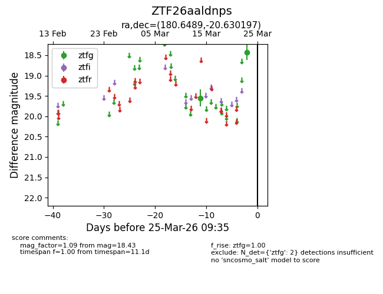
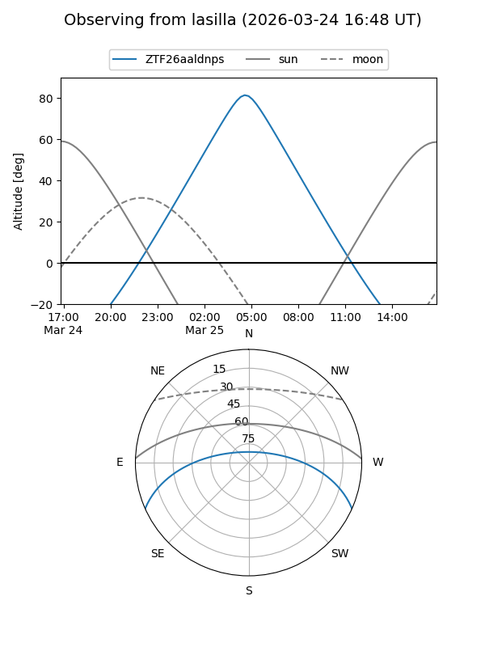
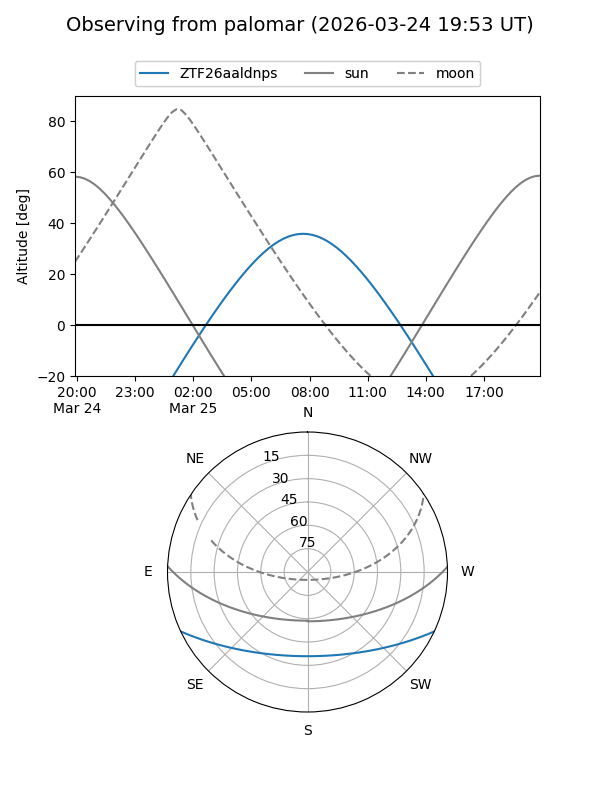

ZTF26aaldnps
Target ZTF26aaldnps at 2026-03-25 09:38
Aliases and brokers:
FINK: link
Lasair: link
ALeRCE: link
alt names
ZTF26aaldnps (ztf,fink_ztf)
Coordinates:
equatorial (ra, dec) = 180.6489,-20.63020
equatorial (HMS+DMS) = 12:02:35.74,-20:37:48.71
galactic (l, b) = (287.7739,+40.79953)
Flags:
Photometry:
last ztfg=18.43
2 ztfg detections
Lightcurve

Visibility


Additional plots